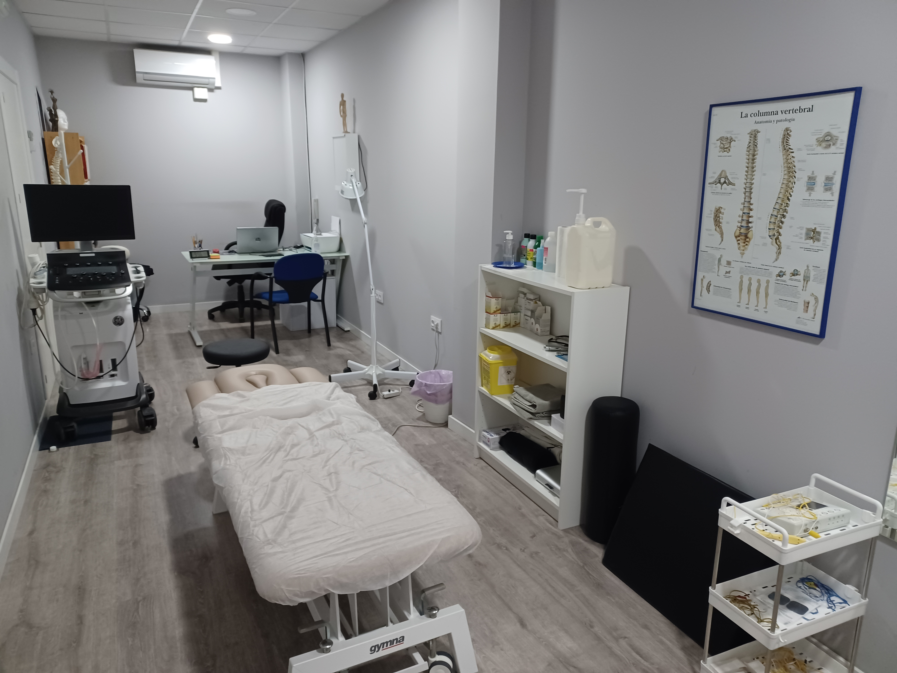

<article class="mb-5 px-4">
	<div class="container-fluid">
		<div class="row">
			<div class="col-md-6 mt-5">
				
			</div>
			<div class="col-md-6 mt-5">
				<h1 class="text-primary">TRATAMIENTO DE FISIOTERAPIA</h1>
				<p>La fisioterapia, también conocida como terapia física, es una disciplina de ciencias de la salud que ofrece tratamiento y rehabilitación física para diagnosticar, prevenir y tratar síntomas de múltiples patologías, tanto agudas como crónicas.</p>
				<p>Según la Confederación Mundial para la Fisioterapia, la fisioterapia tiene como objetivo facilitar el desarrollo, mantenimiento y recuperación de la máxima funcionalidad y movilidad del individuo o grupo de personas a través de su vida.</p>
				<p>Se caracteriza por buscar el desarrollo adecuado de las funciones que producen los sistemas del cuerpo, donde su buen o mal funcionamiento repercute en la cinética o movimiento corporal humano. Interviene, mediante el empleo de técnicas científicamente demostradas, cuando el ser humano ha perdido o se encuentra en riesgo de perder, o alterar de forma temporal o permanente, el adecuado movimiento, y con ello las funciones físicas, sin olvidar el papel fundamental que tiene la fisioterapia en el ámbito de la prevención para el óptimo estado general de salud.</p>
			</div>
		</div>
        <div class="row">
            <div class="col-md-6 my-5">
                <p>
					En nuestra clínica contamos con un servicio de fisioterapia adaptado a las necesidades actuales, tanto en terapias consevadoras como avanzadas. Por ello ofrecemos un amplio abanico de posibilidades de tratamiento entre las que encontramos:</p>

				<ul>
					<li>Terapia manual</li>
					<li>Osteopatía</li>
					<li>Tratamiento de la ATM (Articulación temporo mandibular)</li>
					<li>Vendaje funcional</li>
					<li>Ecografía músculo esquelética</li>
					<li>Punción seca, electro punción</li>
					<li>Fisioterapia invasiva (electrólisis percutánea, neuromodulación, EPTE®)</li>
					<li>tDCS (estimulación transcraneal por corriente directa)</li>
					<li>Ondas de choque</li>
					<li>Radiofrecuencia (WINBACK®)</li>
					<li>Ejercicio terapéutico</li>
					<li>Tratamiento miofascial</li>
					<li>Asesoramiento</li>
				</ul>
            </div>
        </div>
	</div>
</article>
